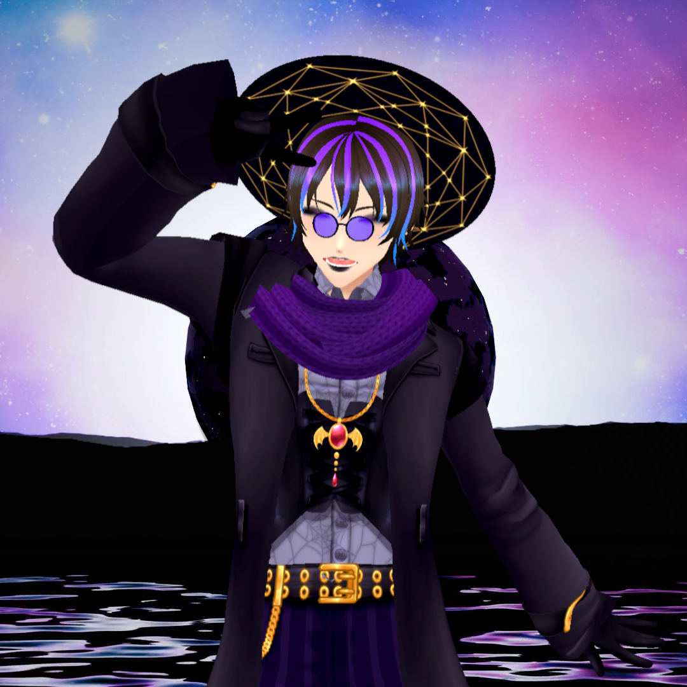
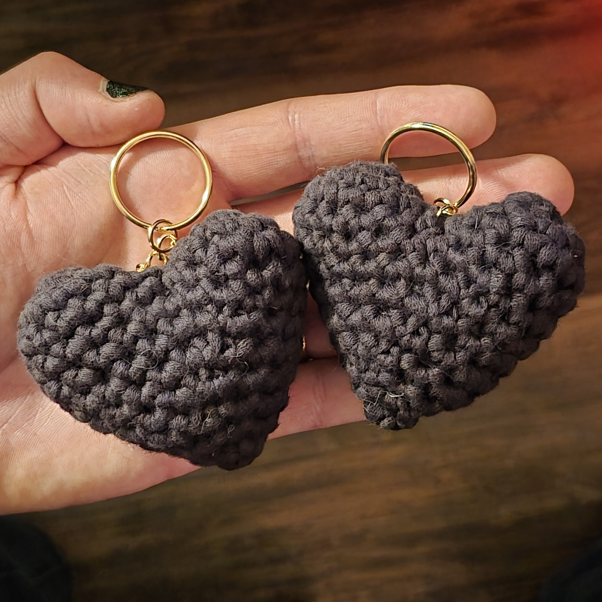

Hello! My name is Rad No Mad. You may know me as a psychedelic DJ wizard VTuber and an electronic musician, but I spend a lot of my time both on and off stream working on crochet pieces!
I picked up crochet in January 2026, and I immediately fell in love with the medium. I love the feel of the yarn, the motion of moving my hook through the stitches, the evolution of a piece as more stitches are added, and the never-ending creativity of those who come up with new patterns. From amigurumi dolls, to simple scarves and gloves, to larger articles of clothing and custom projects, I’ve learned a lot since I’ve started, and I’m always looking to push myself to learn more complex techniques.
MYPSY is a community-driven project with the goal of sharing and uplifiting art within the VTubing space. VTubing has a rich history of artistically-driven talent, whether it's visual identity, drawing, music, etc., and many of the most talented creators often go unsung.
The number one goal of MYPSY is to celebrate the joy of creation - that is, the development of art itself is a monumental event worth celebrating, beyond the final work! To align MYPSY members and supporters in achieving our goal, I propose the following:
